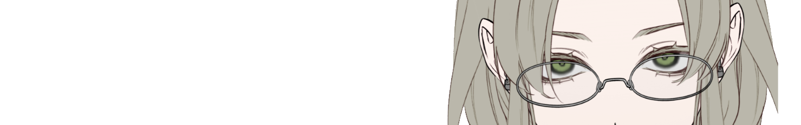
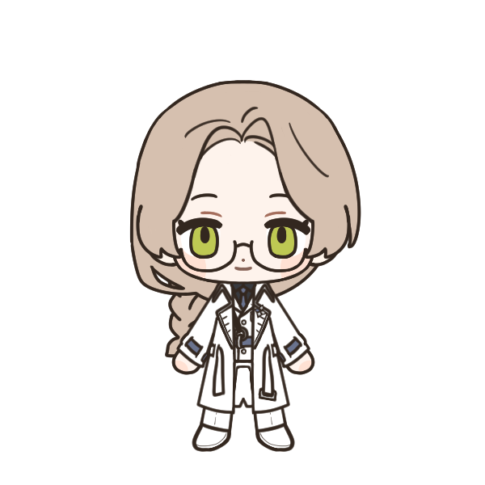
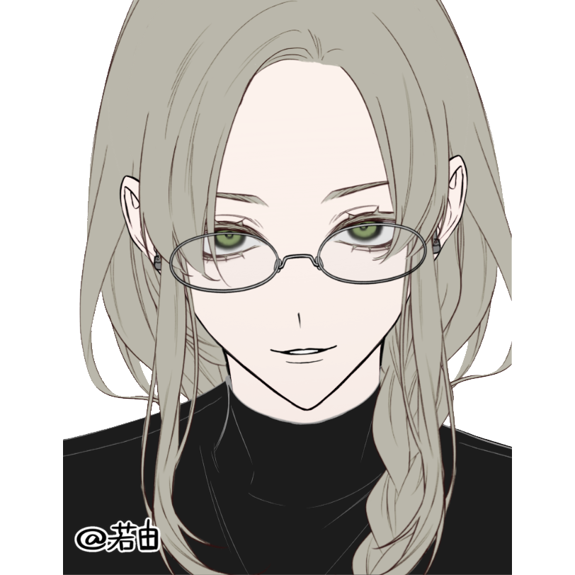

Roxane Kline 상해가능정도 및 트리거 요소
상해가능정도 및 트리거 요소
 이상의 잔향
이상의 잔향
“ 모든 생명은 언젠가 지기 마련이란다. ”
외관
출처 ∣ https://www.neka.cc/composer/13574
결이 좋은 밀빛 머리칼을 길게 땋아 늘어뜨리고, 새하얀 꽃이 그 끝을 고정한 채다. 부드러이 혈색이 도는 낯 위로는 언제나 옅은 웃음이 상냥하게 걸려 있으며 나른히 상대를 응시하는 시선은 따스한 녹색으로 생명의 빛이다. 둥근 안경은 시력이 꽤나 좋지 않은 관계로 렌즈가 제법 두껍다.
왼쪽 귀에 착용한 G-011을 제외하면 어떠한 액세서리도 없이 단정하고 말끔한 차림새. 검은 셔츠 위 차려입는 제복 또한 흠 잡을 곳 하나 없다. 크지 않은 체구에 부드러운 인상 탓에 이 전장에서 수십 년을 살아남은 이로는 보이지 않는다. 그럼에도 불구하고, 그가 맡은 작전은 하나같이 높은 성공률을 자랑하여 곳곳에서 굳건한 신뢰를 받고 있다.
성격
[ 애정어린 다정 ∣ 이상적인 욕망 ∣ 포용하는 믿음 ]
객관적으로 쓰레기, 주관적으로도 쓰레기.
그는 봄과 같은 이였다. 꼭 그가 피워내는 식물을 닮아 다정한 생명력이 넘쳐 흐르는 이. 타인을 사랑할 줄 알며 사랑 받을 줄 또한 알았다. 만물을 애정하는 여인은 곧 생명을 사랑하는 탐구자다. 그러니 그는 평생을 죽어가는 인류를 위해 자의로 나서는 이가 될 수 있었다. 이 땅의 가장 밑바닥에서 태어난 고결한 정의. 그것이 록산느 클라인을 가리키는 말일 테다.
이 상냥한 여인에게는 원대한 꿈이 있다. 인류가 과거 이룩했다던 그 영광을, 다시 한 번 이 땅에 돌려놓는 것이다. 모두가 오로지 눈 앞의 생존에 매달리기 급급할 때, 그는 더 먼 미래를 바란다. 이 이상은 그의 강점이자 단점이다. 이는 그에게 생존욕구를 뛰어넘어 더 큰 원동력으로 작용한다. 그는 기어코 침착함을 유지하며 다른 이들이 놓친 것을 찾아내고야 만다. 누군가는 허황되고도 미련하기 짝이 없는 거짓된 이상이라 여기는 이것은, 지식욕에서 비롯된 무거운 욕망이 지닌 힘이다. 살아남은 인류는 고작 10%. 그 절망적인 경고문을 보고서도 그는 눈을 빛내며 좌절하지 않았다. 아직 인류에게 주어진 역할은 남아 있으니까. 모두의 신뢰를 한몸에 받는 이. 강제 징집에 불만을 가지고 원망과 불안을 쏟아내는 이들마저도 그의 앞에서는 한없이 여려지더라. 그가 타인을 포용하는 태도는 이해와 배려에서 비롯된다. 타인의 실수도 용인하며 비난 한 마디 꺼낸 적이 없고 개인의 시간까지 소모해가며 그 실수를 만회하기 위한 기회를 제공하기까지 하려 노력한다. 자칫 만만히 여겨질 수도 있을 법한 상냥한 성정은 되려 그를 지키는 방패와 검이 되어 사람들이 그를 신뢰하고 따르도록 만들고야 만다.
능력 평가도
이능력 등록
이능력 활용 기입서
기타
Roxane Kline
그는 외롭고도 굳건하게 세워진 벽 안, 가이아의 영토 아래 가장 깊은 곳에서 태어났다. 아버지는 광산의 광부였고 어머니는 그들의 거주지인 지하에 자리잡은 고등교육기관의 선생이었다. 아이 하나 키우는 것도 버거웠던 부부는, 금슬이 좋았음에도 불구하고 록산느만을 유일한 자식으로 두었다. 치안이 좋지 못한 지하에서 살아가며 부부는 아이를 안전하게 키우고 싶어 아내의 근무지인 고등교육기관의 인근에 살았다. 부모님이 모두 바쁘시니, 자연스레 그는 위험한 광산보다는 교육기관의 허용된 공간 내에서 생활하는 경우가 잦았다. 어머니의 일이 끝날 때까지 작고 조용한 도서관 한 켠에 가만 앉아서 책장을 가득 채운 책들을 하나 둘 읽었다. 지하에서 고등교육을 이수하는 이는 드물었으니, 그 안에 들여둔 책들 또한 낡은 것들 뿐이었다. 그럼에도, 찢어진 페이지나 번진 글자들은 그의 호기심을 가라앉히는 데에는 전혀 영향이 없었다. Intellectual Hunger 어머니를 닮아서일까. 그는 그 어릴 적부터 머리가 비상했다. 하나를 가르치면 열을 깨달았으며 그 스스로도 새로운 것을 알아가는 행위에 기뻐했고 더 많은 지식을 욕심냈다. 그 어린 것이 왜? 그야, 읽었던 책 가운데 멸절하기 이전의 인류에 대해 서술한 것이 있었던 까닭이다. 온전한 기록이 남아 있지 않으니 상세하고 명확한 것은 없었다. 대다수가 추론에 불과했으며 모르는 이가 보아도 말도 안된다 여겨지는 내용 또한 헤아릴 수 없었다. 그럼에도 그 가운데 커다랗게 그려넣어진 상상화가 그 어린 아이의 눈에는 그리도 아름다울 수가 없더라. 이 땅 위로 올라가면, 견고한 벽이 있고. 그 견고한 벽 너머에는 이 행성에 존재하는 모든 생명을 아우르던 인류의 흔적이. 아이는 언젠가 그것을 볼 날을 꿈꾸며 눈을 빛냈다. 그의 나이 아홉에 기초교육을 이수하고, 지하에서는 몇 없는 고등교육 이수자로서 열 아홉의 나이를 맞이한다. 10년 간의 교육과정은 전부 우수한 성적을 거두었으며 모든 것은 아이의 욕망을 본 부모님의 무리한 지원 아래 이루어졌다. 아이는 제게 주어진 기회가 얼마나 어려운 것인지를 알았다. 그러므로 그는 그 기회를 저버리지 않고자 노력했다. 그리고, 그는 기어코 스물 하나의 나이에 지하 출신자들로서는 손에 꼽히게, 반지하에서 작은 생명공학 연구소나마 들어갈 수 있었다. Full Bloom 그러나, 스물 셋이 되던 해에 그는 식물을 피워낼 줄 알게 되었다. 죽어가는 행성에서 화려하게 만개하는 생명. 그와는 참으로 잘 어울리면서도… 이는 그의 꿈을 방해하는 장애물이 되어 그로서는 청천벽력과도 같았을 테다. 모든 이능력자들이 그러하듯 그는 입대가 강제되어 연구소를 그만두고 특수이능전사단에 들어간다. 그렇다 하여 그가 좌절하였는가. 되려 그는 이를 새로운 기회 삼았다. 자신이 살아가던 땅 위를 처음 접하고, 인류가 마주한 위협을 제 눈으로 확인하여 맞서는 것. 달라진 것은 없다. 그는 여전히 인류를 사랑하고, 그는 여전히 더 넓은 세상을 동경한다. 사관학교 과정을 수료한 이후, 그는 주기적으로 꾸준하게 진급 시험을 응시했다. 또한, 그는 군인으로서의 전투력 뿐만 아니라 타인이 생각하지 못한 돌파구를 찾아내기도 하는 등 전략에 있어서도 상당히 두각을 내보였다. 그러다 보니 타인에 비하여 진급이 상당히 빠르게 이루어져, 그는 임관 이후 고작 3년이 지난 스물 여덟의 나이에 대령의 자리에 올랐다. 그리고 대령이 된 지 6년 후, 서른 넷에 준장이 되었다. 101년 여름에 있었던 크리쳐 사태 당시, 그가 눈 앞에서 보았던 수많은 동료들의 죽음마저도 그를 좌절에 빠뜨리지는 못했다. 102년 3월 15일, 누군가 그가 어느 빙결 이능력자와 이야기를 나누는 모습을 보았더랬다. 그리고 마침내 102년 3월 17일, 인류는 가이아 영토를 가로질러 새로이 방어선을 구축했고, 크리쳐에게 그 이상의 전진을 허락하지 않을 수 있었다. 록산느는 그 빙벽을 한참을 바라보았다. 그리하여 103년의 겨울, 유일하게 생존한 특수이능전사단의 단 하나의 부대. 록산느 클라인은 인류 최후의 작전 지휘를 명령 받는다. Etc.
|


|